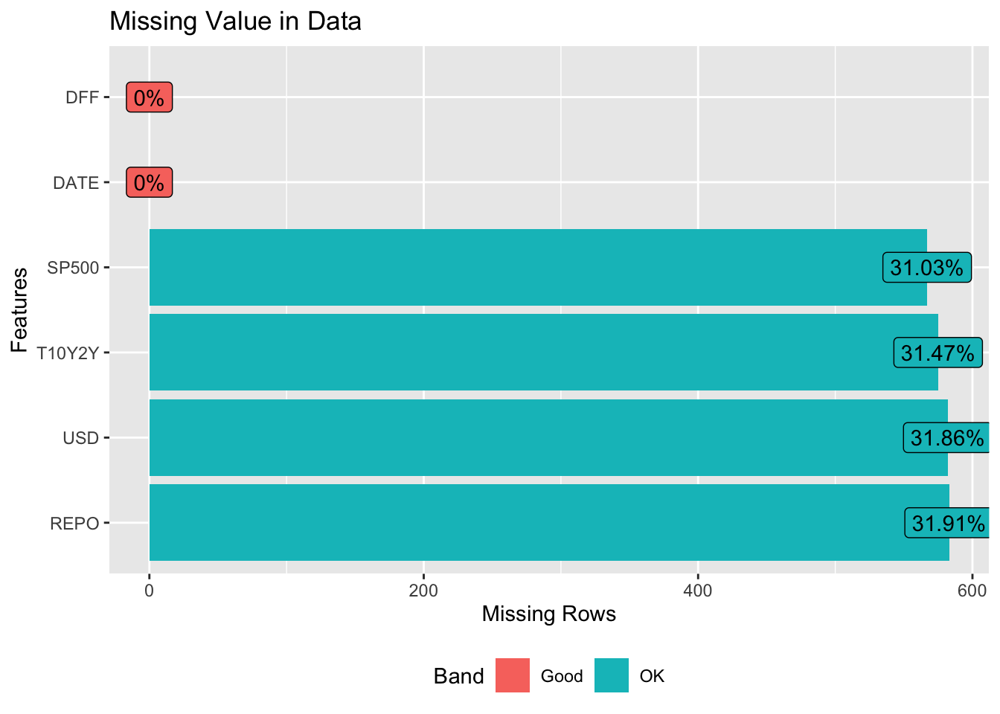
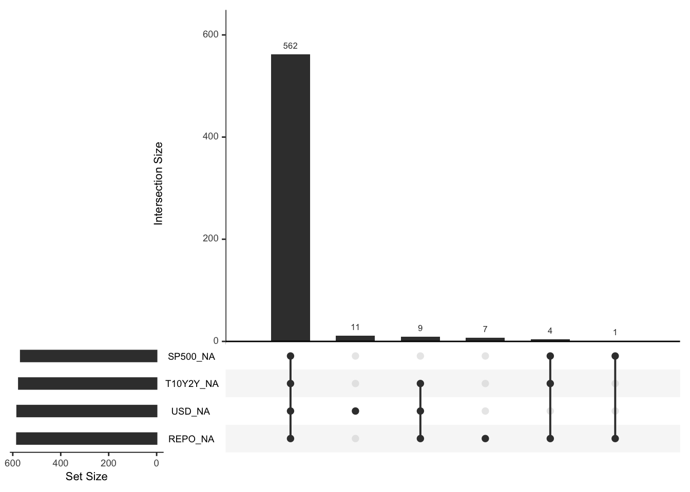

Chapter 3 Data
3.1 Sources
All the data we are using in this project is collected by the Research Department at the Federal Reserve Bank of St. Louis. They collect data from both the public and the private sectors. These data are reported by the Board of Governors, Bureau of Economic Analysis, Bureau of Labor Statistics, and Census—among others. The data collected ranges from international to national to regional and they also collect non-economic data these days for cross-industry analysis. The reason I picked this data source is that the Federal Reserve Bank of St.Louis is one of the most important authorities in the world, its data is relatively more convincing and trustful than other data sources. The dataset we have is a combined version of all of the CSV files we downloaded. All variables are continuous variables, there are 5 columns and 1827 rows. The Federal Funds Effective rate is a percent number, the Overnight Reverse Repurchase Agreements are in billions of dollars, the 10-Year Treasury Constant Maturity Minus 2-Year Treasury Constant Maturity is a percent number, the S&P 500 is an index number and the Nominal Broad U.S. Dollar Index is also an index number. Since the data is from the Federal Reserve Bank of St.Louis’s database, it is overall very clean and tidy. All we did was combined all entries based on the data index.
3.2 Cleaning / transformation
Our initial data has NAs as ‘#NA’ and ‘.’, therefore we transformed those to regular NAs. Other than this, the data set is very clean and does not require other cleaning or transformations.
3.3 Missing value analysis

From the above plots, we can see that the Federal Funds Effective rate(DFF) and the Date variables do not have any missing values. Other variables have about 32% of data missing. From the missing pattern, we can see that all 4 variables have 562 missing values, which contribute to the main missing pattern. Pattern with only USD Index(USD) has 11 missing values, pattern with T10Y2Y, USD, and Overnight Repo missing has 9 missing values, pattern with only REPO missing has 7 missing values, pattern with SP500, T10Y2Y, and REPO has 4 missing values and in the end, pattern with SP500 and REPO missing has 1 value.
The possible reason behind the 562 missing values is that those values are not on trading days. Each year, there are around 250 trading days per year, Monday to Friday, the DFF and DATE variable has all days in one year while other variables only have values from Monday to Friday. Therefore there are 562 entries missing. For these missing values, we deleted all of them.